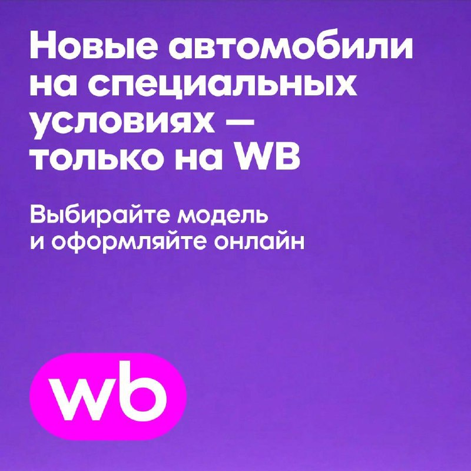
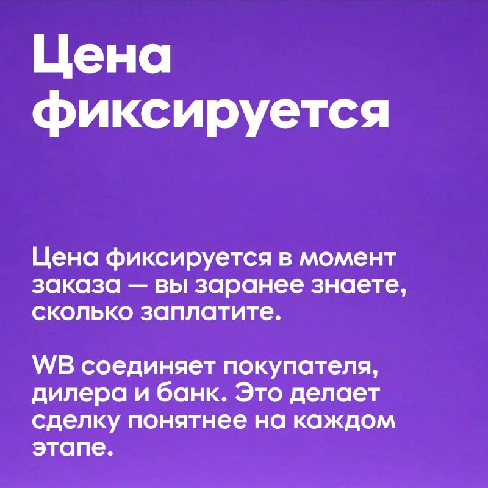

Тачки и Точка
@tachki
Тачки и Точка
@tachki
На Wildberries теперь можно купить АВТОМОБИЛЬ в приложении появился новый раздел WB Авто.


На Wildberries теперь можно купить АВТОМОБИЛЬ — в приложении появился новый раздел WB Авто.
Здесь собрали весь путь от подбора машины до покупки: выбор автомобиля, чат с дилером, оплата любым удобным способом, документы и выдача. В салон приезжаете только забирать свою машину.
Самое главное, что цена прозрачная с самого начала. Сумма, которую видите на WB, финальная: без дополнительных услуг от дилеров. Для безопасности покупателя все условия сделки фиксируются на платформе Wildberries.
А ещё на WB Авто есть специальные предложения:
• Changan Uni-V — скидка ₽824 900, цена со скидкой от ₽2 455 000.
• Solaris KRX — скидка 5% от рекомендованной цены, цена со скидкой от ₽2 455 750. Предложение действительно до 30 октября.
Переходите в раздел WB Авто в приложении Wildberries, выбирайте свой автомобиль и оплачивайте удобным для вас способом.
Здесь собрали весь путь от подбора машины до покупки: выбор автомобиля, чат с дилером, оплата любым удобным способом, документы и выдача. В салон приезжаете только забирать свою машину.
Самое главное, что цена прозрачная с самого начала. Сумма, которую видите на WB, финальная: без дополнительных услуг от дилеров. Для безопасности покупателя все условия сделки фиксируются на платформе Wildberries.
А ещё на WB Авто есть специальные предложения:
• Changan Uni-V — скидка ₽824 900, цена со скидкой от ₽2 455 000.
• Solaris KRX — скидка 5% от рекомендованной цены, цена со скидкой от ₽2 455 750. Предложение действительно до 30 октября.
Переходите в раздел WB Авто в приложении Wildberries, выбирайте свой автомобиль и оплачивайте удобным для вас способом.